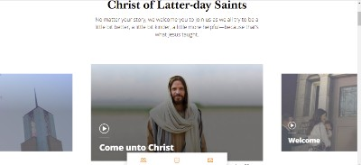
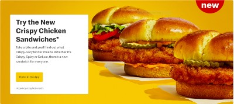
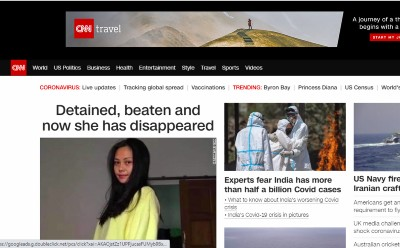

PARC: Alignment
The Church of Jesus Christ of Latter Day Saints
Come Unto CHristThis website is designed to welcome new friends who woulld like to knnow more about the Church. The website adopts the design principle of alignment.
The title welcome message and the subtitle are both aligned vertically making it easier for visitors to know what the site is about
The pictures are aligned horizontally, keeping the site organised and clean
PARC: Proximity
Macrsonalds
MacDonaldsThe principle of proximity is applied on this website.
Pictures of burgers grouped together shows organisaton, the invitation to take a bite and further description goes well together
PARC: Contrast
CNN
CNNThe CNN news website is a good example of contrat principle design
The banner contains white text against black background making it easy to read
The main section os the website has images on white background to achieve the same effect
